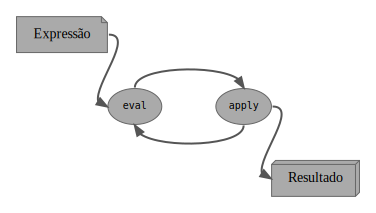

do Zero ao Lisp em Rust
lucas.vieira@ufvjm.edu.br
Universidade Federal dos Vales do Jequitinhonha e Mucuri
08 de dezembro de 2020
Discente de Sistemas de Informação pela UFVJM
Interesses: Inteligência artificial, ciência cognitiva, filosofia da mente, teoria da computação, desenvolvimento de linguagens de programação, desenvolvimento de jogos, programação bare-metal
Co-fundador da Common Lisp Brasil
lisp.com.br
@luksamuk luksamuk.codes luksamuk
Dialeto da família das linguagens Lisp.
Dialeto de Lisp criado por Paul Graham em 2019.
Escrito como literate program na forma de livro, guia o leitor sobre como construir um interpretador de Majestic passo-a-passo em Rust.
A escolha não foi motivada por performance, corretude ou safety / security.
rust-gc para coleta de lixo;typedef struct BEL Bel;
typedef struct
{
Bel *car;
Bel *cdr;
} Bel_pair;
struct BEL
{
BEL_TYPE type;
union {
Bel_sym sym;
Bel_pair *pair;
Bel_char chr;
Bel_stream stream;
Bel_number number;
};
};
#[derive(Debug, Trace, Finalize, Clone)]
pub enum Maj {
Sym(u64),
Cons {
car: Gc<Maj>,
cdr: Gc<Maj>
},
Char(char),
Stream(MajStream),
Number(MajNumber)
}
(def *my-list* '(a b c d))
(map (cons 'z) *my-list*)
((z . a) (z . b) (z . c) (z . d))
Faremos comparações com Scheme, Common Lisp, Clojure e Shen.
(define *my-list* '(a b c d))
(map (lambda (x) (cons 'z x)) *my-list*)
Sem muitas diferenças, exceto na aplicação parcial.
Scheme tem desgosto por mutabilidade.
(defparameter *my-list* '(a b c d))
(mapcar (lambda (x) (cons 'z x)) *my-list*)
;; ou...
(loop for x in *my-list* collect (cons 'z x))
Algumas considerações…
(def *my-list* '(a b c d))
(map #(cons 'z %) *my-list*)
…pera, não. Isso dá erro.
Vamos tentar de novo.
(def *my-list* '(a b c d))
(map #(list 'z %) *my-list*)
((z a) (z b) (z c) (z d))
Algumas considerações…
(set *my-list* [a b c d])
(map (cons z) (value *my-list*))
Voltada para metaprogramação. Possui aplicação parcial como Majestic, trabalha com um sistema de tipos estático e opcional.

eval(defn eval. (exp env)
(cond
((numberp exp) exp)
((symbolp exp) (lookup. exp env))
((eq (first exp) 'quote)
(second exp))
((eq (first exp) 'fn)
(list 'closure (rest exp) env))
((primitivep exp) exp)
((eq (first exp) 'cond)
(evcond. (rest exp) env))
((eq (first exp) 'def)
(define. (second exp) (third exp) env))
(t (apply. (eval. (first exp) env)
(evlist. (rest exp) env)))))
apply(defn apply. (proc args)
(cond
((primitivep proc) (apply proc args))
((eq (first proc) 'closure)
(eval. (second (second proc))
(bind. (first (second proc))
args
(third proc))))
(t (err "Undefined procedure: {}" proc))))
(quote foo)
*mynum*
(def square (fn (x) (* x x)))
(square 6)
(cond ((eq (= 1 1) t)
(quote okay))
(t (quote nay)))
(((fn (x)
(fn (y) (+ x y))) 3)
4)
foo
7
square
36
okay
7
Perguntas?
ABELSON, H.; SUSSMAN, G. J. Structure and Interpretation of Computer Programs. MIT Press: Cambridge, 1996. ISBN: 978-0-262-51087-5.
TARVER, M. Coding a Lisp interpreter in Shen: A case study. 2011. Disponível em: http://www.shenlanguage.org/shenpaper.pdf. Acesso em 24/11/2020.
GRAHAM, P. The Bel Language. Outubro de 2019. Disponível em: http://www.paulgraham.com/bel.html. Acesso em 02/11/2020.
GRAHAM, P. The roots of Lisp. Janeiro de 2002. Disponível em: http://www.paulgraham.com/rootsoflisp.html. Acesso em 02/11/2020.